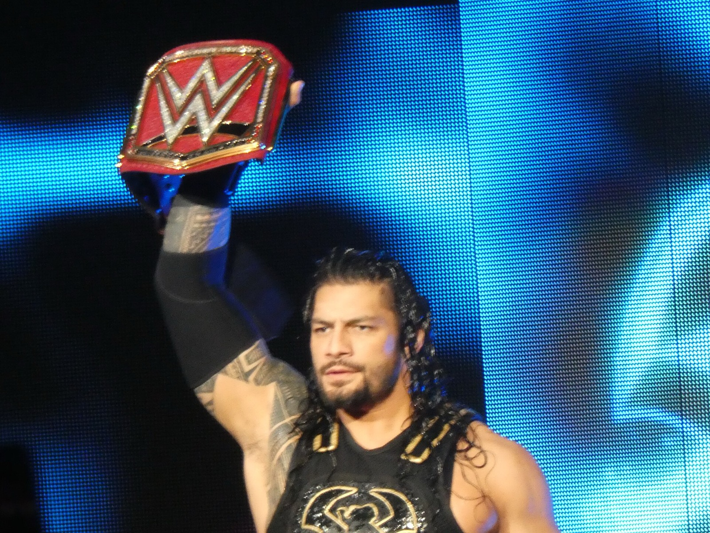
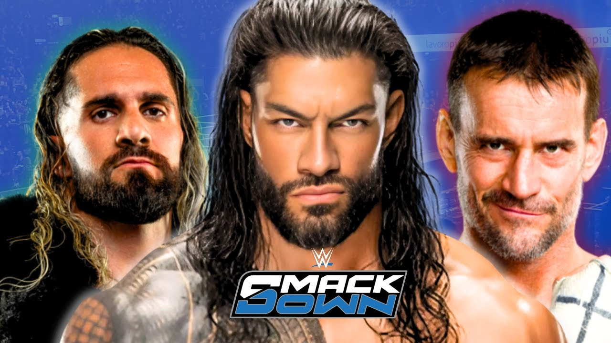
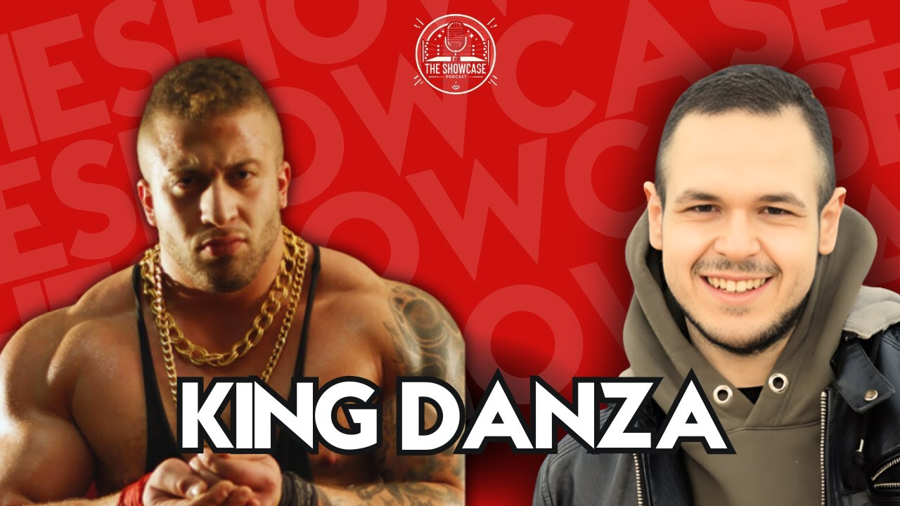

Wrestler
Roman Reigns
News, storie e pronostici su Roman Reigns, in italiano.
Tutto quello che ho scritto su Roman Reigns: notizie, analisi e pronostici in italiano, dal più recente. La pagina si aggiorna da sola a ogni nuovo articolo.

Crown Jewel 2026 resta a Riyadh, per ora: aeroporto chiuso e allerte di viaggioFlash News21 ottobre 20263 min Roman Reigns: età, altezza, vero nome, moglie e carriera5 curiosità21 ottobre 20263 min
Roman Reigns: età, altezza, vero nome, moglie e carriera5 curiosità21 ottobre 20263 min Le teorie folli su WrestleMania 41: quali ci hanno preso e quali noLo sapevi che21 ottobre 20265 min
Le teorie folli su WrestleMania 41: quali ci hanno preso e quali noLo sapevi che21 ottobre 20265 min La vera storia di Cody Rhodes: da licenziato a volto della WWELa vera storia di…21 ottobre 20265 min
La vera storia di Cody Rhodes: da licenziato a volto della WWELa vera storia di…21 ottobre 20265 min La vera storia di Oba Femi: chi è il Ruler, dal lancio del peso al King of the RingLa vera storia di…21 ottobre 20265 min
La vera storia di Oba Femi: chi è il Ruler, dal lancio del peso al King of the RingLa vera storia di…21 ottobre 20265 min La vera storia di Penta: dal nulla alla WWE (e alla valigetta del Money in the Bank)La vera storia di…21 ottobre 20265 min
La vera storia di Penta: dal nulla alla WWE (e alla valigetta del Money in the Bank)La vera storia di…21 ottobre 20265 min- La vera storia di Roman Reigns: dal niente a Tribal Chief (e di nuovo campione)La vera storia di…21 ottobre 20265 min

Ho visto WWE SmackDown a Bologna: Roman Reigns, CM Punk e Seth Rollins dal vivoVlog21 ottobre 20264 min Come la WWE ha fallito con Cesaro: il push mancato di Claudio CastagnoliCome la WWE ha fallito con…21 ottobre 20267 min
Come la WWE ha fallito con Cesaro: il push mancato di Claudio CastagnoliCome la WWE ha fallito con…21 ottobre 20267 min Risultati WWE Raw 19 ottobre 2026: Roman Reigns torna e salva la Bloodline dai 946Reaction20 ottobre 20265 min
Risultati WWE Raw 19 ottobre 2026: Roman Reigns torna e salva la Bloodline dai 946Reaction20 ottobre 20265 min Alessio Marsadri (Alex Fiery): chi è il creator di wrestling di TikTok, la mia intervistaThe Showcase20 ottobre 20265 min
Alessio Marsadri (Alex Fiery): chi è il creator di wrestling di TikTok, la mia intervistaThe Showcase20 ottobre 20265 min Cry Gallagher Legend Killer: il creator fan di Randy Orton a The ShowcaseThe Showcase20 ottobre 20264 min
Cry Gallagher Legend Killer: il creator fan di Randy Orton a The ShowcaseThe Showcase20 ottobre 20264 min Egames: chi è il creator e cosa mi ha raccontato a The ShowcaseThe Showcase20 ottobre 20264 min
Egames: chi è il creator e cosa mi ha raccontato a The ShowcaseThe Showcase20 ottobre 20264 min
King Danza: chi è il wrestler italiano allievo di Ultimo Dragon (intervista The Showcase)The Showcase20 ottobre 20264 min Main Event Club: chi sono Leo e Isu, i creator di wrestling e WWE 2KThe Showcase20 ottobre 20264 min
Main Event Club: chi sono Leo e Isu, i creator di wrestling e WWE 2KThe Showcase20 ottobre 20264 min MaxIsAwesome92: il nonno degli youtuber di wrestling italiani a The ShowcaseThe Showcase20 ottobre 20264 min
MaxIsAwesome92: il nonno degli youtuber di wrestling italiani a The ShowcaseThe Showcase20 ottobre 20264 min The Wrestler Trip: Davide e la vita da aspirante wrestlerThe Showcase20 ottobre 20264 min
The Wrestler Trip: Davide e la vita da aspirante wrestlerThe Showcase20 ottobre 20264 min Seth Rollins è sparito: cosa sta succedendo davveroFlash News14 ottobre 20262 min
Seth Rollins è sparito: cosa sta succedendo davveroFlash News14 ottobre 20262 min Chi può battere Roman Reigns? La risposta è Oba FemiPronostici14 ottobre 20262 min
Chi può battere Roman Reigns? La risposta è Oba FemiPronostici14 ottobre 20262 min- WarGames, Bloodline contro 946: il mio pronosticoPronostici14 ottobre 20262 min